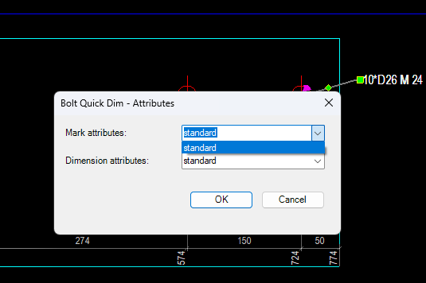

iVidLab Bolt Quick Dim — Đo bu-lông và đánh số hiệu trong bản vẽ Tekla, chọn hai cái là xong
Mở bản vẽ, chọn một nhóm bu-lông và một cấu kiện: công cụ tự vẽ toàn bộ kích thước và đánh số hiệu, không cần dựng tay từng đường kích thước.
Tóm tắt nhanh
- Tự đo kích thước bu-lông theo cấu kiện đã chọn, cho cả dầm lẫn bản mã.
- Tự đánh số hiệu cho nhóm bu-lông và cho cấu kiện, cùng một lần bấm.
- Chọn được kiểu trình bày, dùng đúng bộ chuẩn công ty có sẵn trong Tekla.
1. Cách dùng
- Mở bản vẽ cần đo trong Tekla.
- Chạy macro Bolt Quick Dim.
- Chọn một nhóm bu-lông, rồi chọn một cấu kiện (dầm hoặc bản mã) để đo theo.
Công cụ vẽ xong kích thước và số hiệu chỉ trong vài giây, thay cho chuỗi thao tác chọn lệnh, chọn bu-lông, mở hộp thoại mark rồi bấm OK.
2. Làm được gì
| Tính năng | Mô tả |
|---|---|
| Tự đo kích thước bu-lông | Vẽ đầy đủ các đường kích thước định vị từng bu-lông theo cấu kiện đã chọn, cả hai phương, cộng thêm kích thước tổng thể bao quanh |
| Dầm lẫn bản mã | Nhận ra loại cấu kiện (Beam / Contour Plate) và tự chọn cách đo phù hợp |
| Đánh số hiệu bu-lông | Tạo luôn ký hiệu (mark) cho nhóm bu-lông vừa đo, không cần gọi lệnh riêng |
| Đánh số hiệu cấu kiện | Đồng thời tạo ký hiệu (mark) cho cấu kiện được chọn |
| Chọn kiểu trình bày | Hộp thoại nhỏ cho chọn kiểu số hiệu bu-lông, số hiệu cấu kiện và kiểu đường kích thước |

3. Vì sao đáng dùng
- Gộp hai thao tác hay làm riêng lẻ, đo kích thước và đánh mark, thành một lần bấm.
- Không phải nhớ quy trình nhiều bước như làm tay.
- Vẫn theo kiểu trình bày riêng của từng công ty và dự án, không ép một style cố định.
4. Cài đặt
- Ở mục Tải về bên dưới, chọn phiên bản Tekla đang dùng để tải gói
.tsep(từ Tekla 2016 trở lên). - Nếu đã cài bản cũ, gỡ trong Tekla Extension Manager trước.
- Nhấp đúp file
.tsep, tick phiên bản Tekla rồi bấm Import. Gói được cài khi Tekla khởi động lần tiếp theo.
iVidLab Bolt Quick Dim — Dimension bolts and add marks in Tekla drawings with two picks
Open a drawing, pick a bolt group and a part: the tool draws all the dimensions and adds the marks, with no need to build each dimension line by hand.
At a glance
- Bolt dimensions are drawn for you relative to the part you pick, for beams and plates alike.
- Bolt and part marks are added in the same single run.
- Choose the presentation style, using your company standards already in Tekla.
1. How to use it
- Open the drawing you want to dimension in Tekla.
- Run the Bolt Quick Dim macro.
- Pick a bolt group, then pick a part (beam or plate) to dimension against.
The dimensions and marks are drawn in seconds, in place of the usual chain of choosing a command, picking the bolts, opening the mark dialog and clicking OK.
2. What it does
| Feature | Description |
|---|---|
| Automatic bolt dimensions | Draws the dimension lines that locate each bolt relative to the picked part, in both directions, plus the overall dimension around the group |
| Beams and plates | Recognises the part type (Beam / Contour Plate) and picks the matching way to dimension it |
| Bolt marks | Creates the mark for the bolt group you just dimensioned, no separate command |
| Part marks | Creates the mark for the picked part at the same time |
| Choose the style | A small dialog to pick the bolt mark style, part mark style and dimension style |
3. Why use it
- Two jobs you usually do separately, dimensioning and marking, become one click.
- No multi-step routine to remember as when working by hand.
- It still follows each company or project presentation style instead of forcing one fixed style.
4. Installing
- In the Download section below, select your Tekla version to get the
.tseppackage (Tekla 2016 or newer). - If an older version is installed, uninstall it in Tekla Extension Manager first.
- Double-click the
.tsepfile, tick your Tekla version and click Import. The package is installed the next time Tekla starts.
Tải vềDownload

Nhóm Zalo người dùng iViDLabiViDLab user group on Zalo
Quét mã QR hoặc bấm nút bên cạnh để vào nhóm: hỏi đáp khi sử dụng, báo lỗi và nhận thông báo bản cập nhật mới.
Scan the QR code or use the button to join the group: usage questions, bug reports and new release announcements.
Liên hệ iViDLabContact iViDLab
Theo dõi fanpage Facebook hoặc gửi email để được hỗ trợ và góp ý.
Follow the Facebook page or send an email for support and feedback.